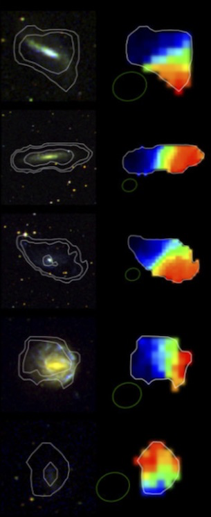
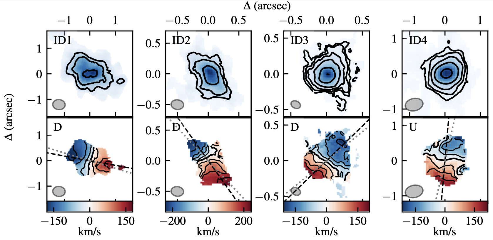
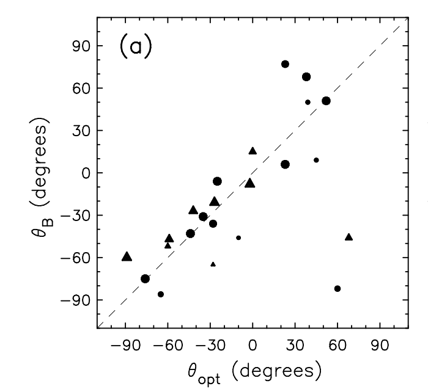
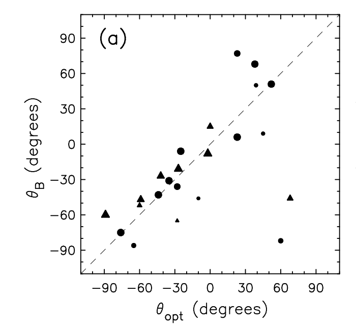

Shear with Radio Galaxy
Polarization
& Kinematics
Nice TOSCA Meeting
November 8th, 2024
Intuitive Picture


KL State of the Art (R. S. et al. 2024)
- 141 target galaxies \(\to\) 3 after cuts.
- use Tully-Fisher to estimate inclination \(\implies\) intrinsic ellipticity
- \(\gamma_+\) constrained via Tully-Fisher
- \(\gamma_\times\) via kinematic-photometric misalignment
- per-galaxy SNR > 1, and 10\(\times\) reduction in shape noise!


KL Symmetries (Hopp & Witmann 2024)


Almost Feasible with WALLABY?
21 CM H1 survey, 30” resolution, up to z=0.1


WALLABY website, data from Serra et al. (2015)
Feasible with ALMA
The ALMA-ALPAKA survey I (Rizzo et al. 2023)
high-resolution CO and [CI] kinematics of star-forming galaxies at z = 0.5-3.5


Intuition
Star-forming galaxies dominate observed sources
- synchrotron emission driven by large-scale galactic magnetic fields
\(\implies\) polarization position angle
- synchrotron emission driven by large-scale galactic magnetic fields
Nearby spiral polarization fractions: 1-10% (Stil et al. 2008)
polarization angle not affected by lensing
- but Faraday effect, and cosmic birefringence..
 

Stil et al. (2008)
A Bit of History

A Bit of History
- Whitaker et al. (2015, 2018):
- improve upon B&B11 estimator
- quadratic estimator
using pol. vectors combined with finite-difference gradients of Stokes I - estimates of rotation from birefringence:
2.03º \(\pm\) 0.75º (authors caution Farrady rotation systematics)